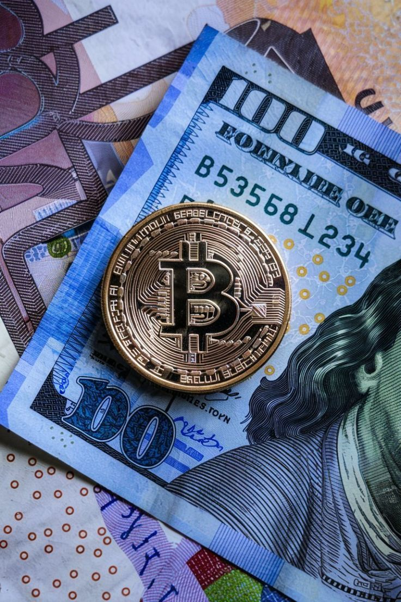
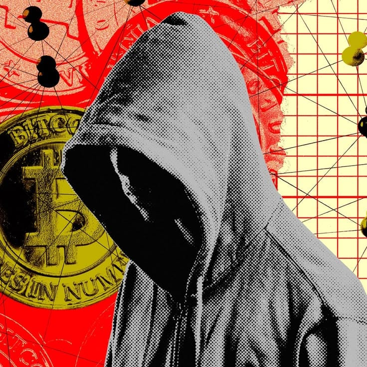
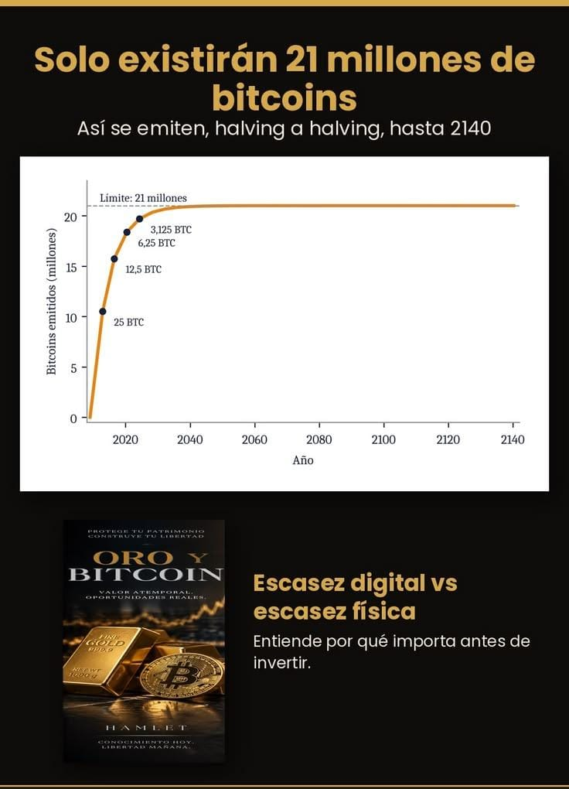
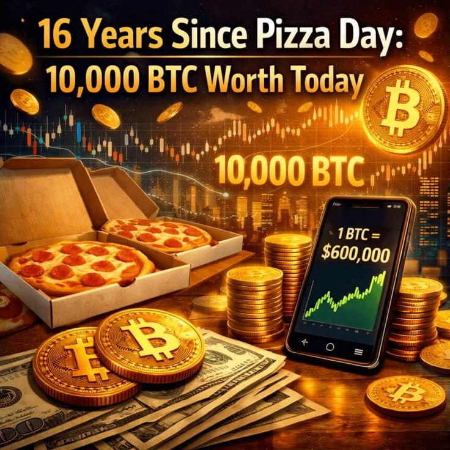

DESCUBRE LOS MISTERIOS, ACONTECIMIENTOS Y DATOS MÁS SORPRENDENTES DE BITCOIN
Bitcoin no solamente es una moneda digital. También es una tecnología que ha cambiado la manera en que muchas personas conocen y utilizan el dinero a través de Internet.
Desde la identidad desconocida de su creador hasta una compra de dos pizzas que hoy tendría un valor extraordinario, Bitcoin tiene historias que parecen increíbles.
A continuación, conoceremos algunos de los datos más interesantes que forman parte de su historia.
El nombre Bitcoin combina dos palabras del inglés: "Bit", relacionado con la información digital, y "Coin", que significa moneda.
Su nombre representa la idea de una moneda que existe en formato digital y que puede utilizarse mediante una red de computadores conectados a Internet.
A diferencia del dinero físico, Bitcoin no necesita billetes ni monedas metálicas para funcionar. Sus operaciones se realizan digitalmente y quedan registradas en una tecnología llamada blockchain.

BITCOIN: UNA MONEDA DIGITAL
La unión entre la tecnología informática y el concepto tradicional de moneda.
Satoshi Nakamoto es el nombre utilizado por la persona o grupo de personas que creó Bitcoin. Aunque publicó documentos y participó en conversaciones por Internet, nunca reveló una identidad comprobada.
En 2008 presentó el documento que explicaba el funcionamiento de Bitcoin y en enero de 2009 comenzó a funcionar la red. Años después, dejó de comunicarse públicamente.
Adam Back: Es un criptógrafo británico que creó Hashcash, una tecnología relacionada con algunas ideas utilizadas por Bitcoin. En 2026, una investigación periodística señaló similitudes entre sus antiguos escritos y los de Satoshi. Back negó ser el creador.
Peter Todd: Es un desarrollador que participó en el mundo de Bitcoin desde sus primeros años. Un documental de 2024 presentó la teoría de que podría ser Satoshi, pero Todd rechazó esa afirmación.
Hal Finney: Fue un importante programador y uno de los primeros participantes de Bitcoin. Recibió la primera transacción de bitcoins enviada por Satoshi. Por su cercanía con el proyecto, algunas personas lo han considerado un posible candidato, aunque él negó ser el creador.
Nick Szabo: Es un especialista en criptografía que desarrolló una propuesta de dinero digital llamada Bit Gold, anterior a Bitcoin. Sus ideas tienen similitudes con algunas características de Bitcoin, pero él también ha negado ser Satoshi.
Aunque existen investigaciones y teorías sobre estas personas, ninguna ha demostrado de manera definitiva quién creó Bitcoin. Por eso, la identidad de Satoshi Nakamoto continúa siendo uno de los mayores misterios de Internet.

EL MISTERIO DE SATOSHI NAKAMOTO
Varias personas han sido relacionadas con la creación de Bitcoin, pero ninguna identidad está confirmada.
Una de las características más sorprendentes de Bitcoin es que su cantidad máxima está limitada a 21 millones de unidades. Esta regla forma parte de su diseño original.
Los nuevos bitcoins se incorporan a la circulación mediante un proceso llamado minería. Sin embargo, la recompensa que reciben los participantes disminuye aproximadamente cada cuatro años.
Este acontecimiento se conoce como halving y reduce a la mitad la cantidad de bitcoins que se entregan como recompensa por bloque.
Debido a este sistema, la creación de nuevos bitcoins se va reduciendo con el tiempo hasta alcanzar el límite establecido.

EL LÍMITE DE 21 MILLONES
Una cantidad máxima establecida en las reglas de funcionamiento de Bitcoin.
El 22 de mayo de 2010 ocurrió uno de los acontecimientos más famosos de la historia de Bitcoin. Un programador llamado Laszlo Hanyecz pagó 10.000 bitcoins por dos pizzas.
En aquel momento, Bitcoin era una tecnología nueva y poco conocida. Esta compra fue uno de los primeros ejemplos famosos de su utilización para adquirir un producto del mundo real.
Lo sorprendente es cuánto representarían esos 10.000 bitcoins si se valoraran con el precio de mercado actual.
US$611.343.400
$2,14 BILLONES COP
Estimación aproximada del 23 de noviembre de 2026. El precio de Bitcoin y el valor del dólar cambian constantemente.
Esto significa que, tomando como referencia ese precio, los bitcoins utilizados para comprar las dos pizzas representarían hoy una cantidad extraordinariamente grande de dinero.
Cada 22 de mayo se recuerda esta compra con el nombre de Bitcoin Pizza Day, una fecha especial para la comunidad de Bitcoin.

BITCOIN PIZZA DAY - 22 DE MAYO
Una compra que comenzó como un intercambio de dos pizzas y terminó convirtiéndose en una de las historias más conocidas de las criptomonedas.
Bitcoin tiene un símbolo propio: ₿. Este representa visualmente a la criptomoneda y se utiliza en diferentes páginas web, aplicaciones, noticias y plataformas digitales.
Su diseño está inspirado en la letra B mayúscula, acompañada por dos líneas verticales. El color naranja también se ha convertido en uno de los elementos más reconocidos de su identidad visual.
Gracias a este símbolo, es fácil identificar referencias a Bitcoin en diferentes medios y espacios relacionados con la tecnología.
SÍMBOLO DE BITCOIN
Aunque muchas personas creen que Bitcoin solamente puede utilizarse en cantidades completas, también se puede dividir en unidades más pequeñas.
La unidad más pequeña se llama satoshi, en honor al creador de Bitcoin. Un bitcoin equivale a 100 millones de satoshis.
Esto permite representar cantidades muy pequeñas de Bitcoin sin necesidad de utilizar una moneda completa.
Bitcoin tiene una historia llena de acontecimientos sorprendentes. Su creador desconocido, su cantidad limitada, la famosa compra de las pizzas y su evolución muestran cómo una idea tecnológica llegó a tener importancia en todo el mundo.
Estos datos nos ayudan a comprender que Bitcoin no es solamente una moneda digital, sino también un proyecto tecnológico que ha generado cambios, debates y muchas preguntas que todavía continúan despertando interés.
¿Cuánto sabes sobre Bitcoin, blockchain y las criptomonedas? Demuestra tus conocimientos en esta trivia interactiva.
¡Diviértete aprendiendo sobre Bitcoin!
ABRIR JUEGO EN QUIZVERSE